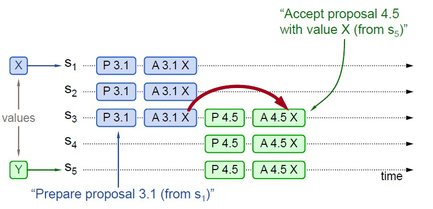
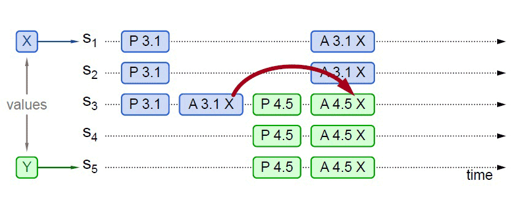
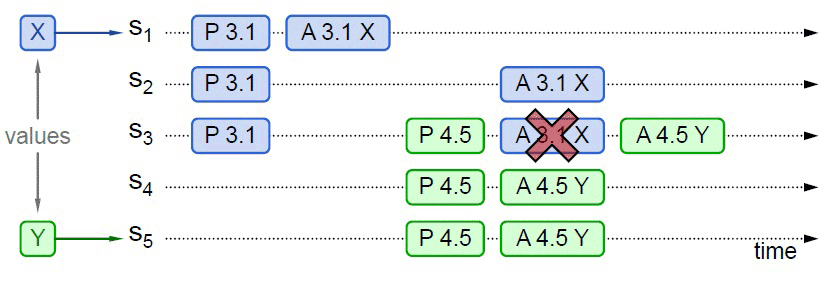
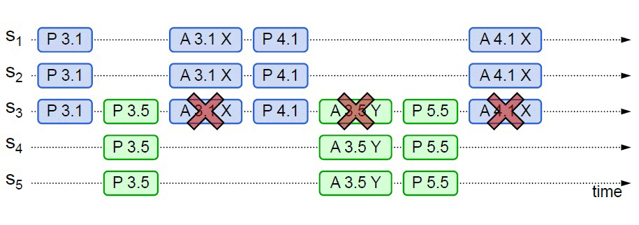

- 00 _导读 _ 什么是“The Fenix Project”？.md.html
- 00 开篇词 _ 如何构建一个可靠的分布式系统？.md.html
- 01 _ 原始分布式时代：Unix设计哲学下的服务探索.md.html
- 02 _ 单体系统时代：应用最广泛的架构风格.md.html
- 03 _ SOA时代：成功理论与失败实践.md.html
- 04 _ 微服务时代：SOA的革命者.md.html
- 05 _ 后微服务时代：跨越软件与硬件之间的界限.md.html
- 06 _ 无服务时代：“不分布式”云端系统的起点.md.html
- 07 _ 远程服务调用（上）：从本地方法到远程方法的桥梁.md.html
- 08 _ 远程服务调用（下）：如何选择适合自己的RPC框架？.md.html
- 09 _ RESTful服务（上）：从面向过程编程到面向资源编程.md.html
- 10 _ RESTful服务（下）：如何评价服务是否RESTful？.md.html
- 11 _ 本地事务如何实现原子性和持久性？.md.html
- 12 _ 本地事务如何实现隔离性？.md.html
- 13 _ 全局事务和共享事务是如何实现的？.md.html
- 14 _ 分布式事务之可靠消息队列.md.html
- 15 _ 分布式事务之TCC与SAGA.md.html
- 16 _ 域名解析系统，优化HTTP性能的第一步.md.html
- 17 _ 客户端缓存是如何帮助服务器分担流量的？.md.html
- 18 _ 传输链路，优化HTTP传输速度的小技巧.md.html
- 19 _ 如何利用内容分发网络来提高网络性能？.md.html
- 20 _ 常见的四层负载均衡的工作模式是怎样的？.md.html
- 21 _ 服务端缓存的三种属性.md.html
- 22 _ 分布式缓存如何与本地缓存配合，提高系统性能？.md.html
- 23 _ 认证：系统如何正确分辨操作用户的真实身份？.md.html
- 24 _ 授权（上）：系统如何确保授权的过程可靠？.md.html
- 25 _ 授权（下）：系统如何确保授权的结果可控？.md.html
- 26 _ 凭证：系统如何保证与用户之间的承诺是准确完整且不可抵赖的？.md.html
- 27 _ 保密：系统如何保证敏感数据无法被内外部人员窃取滥用？.md.html
- 28 _ 传输（上）：传输安全的基础，摘要、加密与签名.md.html
- 29 _ 传输（下）：数字证书与传输安全层.md.html
- 30 _ 验证：系统如何确保提交给服务的数据是安全的？.md.html
- 31 _ 分布式共识（上）：想用好分布式框架，先学会Paxos算法吧.md.html
- 32 _ 分布式共识（下）：Multi Paxos、Raft与Gossip，分布式领域的基石.md.html
- 33 _ 服务发现如何做到持续维护服务地址在动态运维中的时效性？.md.html
- 34 _ 路由凭什么作为微服务网关的基础职能？.md.html
- 35 _ 如何在客户端实现服务的负载均衡？.md.html
- 36 _ 面对程序故障，我们该做些什么？.md.html
- 37 _ 要实现某种容错策略，我们该怎么做？.md.html
- 38 _ 限流的目标与模式.md.html
- 39 _ 如何构建零信任网络安全？.md.html
- 40 _ 如何实现零信任网络下安全的服务访问？.md.html
- 41 _ 分布式架构中的可观测到底说的是什么？.md.html
- 42 _ 分析日志真的没那么简单.md.html
- 43 _ 一个完整的分布式追踪系统是什么样子的？.md.html
- 44 _ 聚合度量能给我们解决什么问题？.md.html
- 45 _ 模块导学：从微服务到云原生.md.html
- 46 _ 容器的崛起（上）：文件、访问、资源的隔离.md.html
- 47 _ 容器的崛起（下）：系统、应用、集群的封装.md.html
- 48 _ 以容器构建系统（上）：隔离与协作.md.html
- 49 _ 以容器构建系统（下）：韧性与弹性.md.html
- 50 _ 应用为中心的封装（上）：Kustomize与Helm.md.html
- 51 _ 应用为中心的封装（下）：Operator与OAM.md.html
- 52 _ Linux网络虚拟化（上）：信息是如何通过网络传输被另一个程序接收到的？.md.html
- 53 _ Linux网络虚拟化（下）：Docker所提供的容器通讯方案有哪些？.md.html
- 54 _ 容器网络与生态：与CNM竞争过后的CNI下的网络插件生态.md.html
- 55 _ 谈谈Kubernetes的存储设计理念.md.html
- 56 _ Kubernetes存储扩展架构：一个真实的存储系统如何接入或移除新存储设备？.md.html
- 57 _ Kubernetes存储生态系统：几种有代表性的CSI存储插件的实现.md.html
- 58 _ Kubernetes的资源模型与调度器设计.md.html
- 59 _ 透明通讯的涅槃（上）：通讯的成本.md.html
- 60 _ 透明通讯的涅槃（下）：控制平面与数据平面.md.html
- 61 _ 服务网格与生态：聊聊服务网格的两项标准规范.md.html
- 62 _ Fenix's Bookstore的前端工程.md.html
- 63 _ 基于Spring Boot的单体架构.md.html
- 64 _ 基于Spring Cloud的微服务架构.md.html
- 65 _ 基于Kubernetes的微服务架构.md.html
- 66 _ 基于Istio的服务网格架构.md.html
- 67 _ 基于云计算的无服务架构.md.html
- 春节特别放送（上）_ 有的放矢，事半功倍.md.html
- 春节特别放送（下）_ 积累沉淀，知行合一.md.html
- 用户故事 _ 詹应达：持续成长，不惧未来.md.html
- 结束语 _ 程序员之路.md.html
- 结课测试 _ 一套习题，测出你的掌握程度.md.html
- 捐赠
31 _ 分布式共识（上）：想用好分布式框架，先学会Paxos算法吧
你好，我是周志明。从这节课起，我会用两讲带你学习分布式共识算法。
可靠与可用、共识与一致
在正式开始探讨分布式环境面临的各种技术问题和解决方案之前，我们先把目光从工业界转到学术界，学习两三种具有代表性的分布式共识算法，为后续分布式环境中操作共享数据打好理论基础。
我们先从一个最简单、最常见的场景开始：如果你有一份很重要的数据，要确保它长期存储在电脑上不会丢失，你会怎么做？
这不是什么脑筋急转弯的古怪问题，答案就是去买几块磁盘，把数据在不同磁盘上多备份几个副本。
假设一块磁盘每年损坏的概率是5%，那把文件复制到另一块磁盘上备份后，数据丢失的概率就变成了0.25%（两块磁盘同时损坏才会导致数据丢失）。以此类推，使用三块磁盘存储数据丢失的概率就是0.00125%，使用四块则是0.0000625%。换句话说，使用四块磁盘来保存同一份数据，就已经保证了这份数据在一年内有超过99.9999%的概率是安全可靠的。
那对应到软件系统里，保障系统可靠性的方法，与拿几个磁盘备份并没有什么本质区别。
单个节点的系统宕机导致无法访问数据的原因可能有很多，比如程序运行出错、硬件损坏、网络分区、电源故障，等等，一年中出现系统宕机的概率也许比5%还要大。这就决定了软件系统也必须有多台机器能够拥有一致的数据副本，才有可能对外提供可靠的服务。
但是，在软件系统里，要保障系统的可用性，面临的困难与磁盘备份却又有着本质的区别。
其中的原因也很好理解：磁盘之间是孤立的不需要互相通讯，备份数据是静态的，初始化后状态就不会发生改变，由人工进行的文件复制操作，很容易就能保证数据在各个备份盘中是一致的。但是，到了分布式系统里面，我们就必须考虑动态的数据如何在不可靠的网络通讯条件下，依然能在各个节点之间正确复制的问题。
现在，我们来修改下要讨论的场景：如果你有一份会随时变动的数据，要确保它能正确地存储在网络中几台不同的机器上，你会怎么做？
这时，你最容易想到的答案一定是“数据同步”：每当数据有变化，就把变化情况在各个节点间的复制看成是一种事务性的操作，只有系统里的每一台机器都反馈成功地完成磁盘写入后，数据的变化才能宣布成功。
我们在第13讲学过的2PC、3PC，就可以实现这种同步操作。同步的一种真实应用场景是，数据库的主从全同步复制（Fully Synchronous Replication）。比如，MySQL Cluster进行全同步复制时，所有Slave节点的Binlog都完成写入后，Master的事务才会进行提交。
不过，这里有一个显而易见的缺陷，尽管可以确保Master和Slave中的数据是绝对一致的，但任何一个Slave节点、因为任何原因未响应都会阻塞整个事务。也就是说，每增加一个Slave节点，整个系统的可用性风险都会增加一分。
以同步为代表的数据复制方法，叫做状态转移（State Transfer）。这类方法属于比较符合人类思维的可靠性保障手段，但通常要以牺牲可用性为代价。
但是，我们在建设分布式系统的时候，往往不能承受这样的代价。对于一些关键系统来说，在必须保障数据正确可靠的前提下，对可用性的要求也非常苛刻。比如，系统要保证数据要达到99.999999%可靠性，同时也要达到99.999%可用的程度。
这就引出了第三个问题：如果你有一份会随时变动的数据，要确保它正确地存储于网络中的几台不同机器之上，并且要尽可能保证数据是随时可用的，你会怎么做？
系统高可用和高可靠之间的矛盾，是由于增加机器数量反而降低了可用性带来的。为缓解这个矛盾，在分布式系统里主流的数据复制方法，是以操作转移（Operation Transfer）为基础的。我们想要改变数据的状态，除了直接将目标状态赋予它之外，还有另一种常用的方法，就是通过某种操作，把源状态转换为目标状态。
能够使用确定的操作，促使状态间产生确定的转移结果的计算模型，在计算机科学中被称为状态机（State Machine）。
状态机有一个特性：任何初始状态一样的状态机，如果执行的命令序列一样，那么最终达到的状态也一样。在这里我们可以这么理解这个特性，要让多台机器的最终状态一致，只要确保它们的初始状态和接收到的操作指令都是完全一致的就可以。
无论这个操作指令是新增、修改、删除或者其他任何可能的程序行为，都可以理解为要将一连串的操作日志正确地广播给各个分布式节点。
广播指令与指令执行期间，允许系统内部状态存在不一致的情况，也就是不要求所有节点的每一条指令都是同时开始、同步完成的，只要求在此期间的内部状态不能被外部观察到，且当操作指令序列执行完成的时候，所有节点的最终的状态是一致的。这种模型，就是状态机复制（State Machine Replication）。
在分布式环境下，考虑到网络分区现象是不可能消除的，而且可以不必去追求系统内所有节点在任何情况下的数据状态都一致，所以采用的是“少数服从多数”的原则。
也就是说，一旦系统中超过半数的节点完成了状态的转换，就可以认为数据的变化已经被正确地存储在了系统当中。这样就可以容忍少数（通常是不超过半数）的节点失联，使得增加机器数量可以用来提升系统整体的可用性。在分布式中，这种思想被叫做Quorum机制。
根据这些讨论，我们需要设计出一种算法，能够让分布式系统内部可以暂时容忍存在不同的状态，但最终能够保证大多数节点的状态能够达成一致；同时，能够让分布式系统在外部看来，始终表现出整体一致的结果。
这个让系统各节点不受局部的网络分区、机器崩溃、执行性能或者其他因素影响，能最终表现出整体一致的过程，就是各个节点的协商共识（Consensus）。
这里需要注意的是，共识（Consensus）与一致性（Consistency）是有区别的：一致性指的是数据不同副本之间的差异，而共识是指达成一致性的方法与过程。
由于翻译的关系，很多中文资料把Consensus同样翻译为一致性，导致网络上大量的“二手中文资料”都混淆了这两个概念。以后你再看到“分布式一致性算法”的时候，应该就知道它指的其实是“Distributed Consensus Algorithm”了。
好了，我们继续来学习分布式中的共识算法。说到这里，我们就不得不提Paxos算法了。
Paxos算法
Paxos算法，是由Leslie Lamport（就是大名鼎鼎的LaTeX中的“La”）提出的一种基于消息传递的协商共识算法。现在，Paxos算法已经成了分布式系统最重要的理论基础，几乎就是“共识”这两字的代名词了。
这个极高的评价来自提出Raft算法的论文“In Search of an Understandable Consensus Algorithm”，更是显得分量十足。
关于Paxos在分布式共识算法中的地位，还有这么一种说法：
There is only one consensus protocol, and that’s “Paxos” — all other approaches are just broken versions of Paxos.- 世界上只有一种共识协议，就是Paxos，其他所有共识算法都是Paxos的退化版本。- —— Mike Burrows，Inventor of Google Chubby
虽然我认为“世界上只有Paxos一种分布式共识算法”的说法有些夸张，但是如果没有Paxos，那后续的Raft、ZAB等算法，ZooKeeper、etcd这些分布式协调框架，Hadoop、Consul这些在此基础上的各类分布式应用，都很可能会延后好几年面世。
但Paxos算法从被第一次提出，到成为分布式系统最重要的理论基础，可谓是经历了一番波折。我们来具体看看。
Paxos算法的诞生之路
为了解释清楚Paxos算法，Lamport虚构了一个叫做“Paxos”的希腊城邦，这个城邦按照民主制度制定法律，却又不存在一个中心化的专职立法机构，而是靠着“兼职议会”（Part-Time Parliament）来完成立法。这就无法保证所有城邦居民都能够及时地了解新的法律提案，也无法保证居民会及时为提案投票。
Paxos算法的目标，就是让城邦能够在每一位居民都不承诺一定会及时参与的情况下，依然可以按照少数服从多数的原则，最终达成一致意见。但是，Paxos算法并不考虑拜占庭将军问题，也就是假设信息可能丢失也可能延迟，但不会被错误传递。
Lamport在1990年首次发表了Paxos算法，选的论文题目就是“The Part-Time Parliament”。由于这个算法本身非常复杂，希腊城邦的比喻使得描述更为晦涩难懂。所以，这篇论文的三个审稿人，一致要求Lamport删掉希腊城邦的故事。这就让Lamport非常不爽，然后干脆就撤稿不发了，所以Paxos刚刚被提出的时候并没有引起什么反响。
到了八年之后，也就是1998年，Lamport把这篇论文重新整理后投到了“ACM Transactions on Computer Systems”。这次论文成功发表，Lamport的名气也确实吸引了一些人去研究，但是并没有多少人能看懂他到底在说什么。
时间又过去了三年，来到了2001年，Lamport认为前两次没有引起什么反响，是因为同行们无法理解他以“希腊城邦”来讲故事的幽默感。所以，他第三次以“Paxos Made Simple”为题，在“SIGACT News”杂志上发表这篇论文的时候，终于放弃了“希腊城邦”的比喻，尽可能用（他认为）简单直接、可读性较强的方式去介绍Paxos算法。这次的情况虽然比前两次要好一些，但以Paxos本应获得的重视程度来说，依然只能算是应者寥寥。
这一段听起来跟网络段子一般的经历，被Lamport以自嘲的形式放到了他的个人网站上。尽管我们作为后辈应该尊重Lamport老爷子，但是当我翻开“Paxos Made Simple”这篇论文，见到只有“The Paxos algorithm, when presented in plain English, is very simple.”这一句话的“摘要”时，还是忍不住在心里怀疑，Lamport这样写论文是不是在恶搞审稿人和读者，在嘲讽“你们这些愚蠢的人类！”。
虽然Lamport本人连发三篇文章都没能让大多数同行理解Paxos，但当时间来到了2006年，Google的Chubby、Megastore和Spanner等分布式系统，都使用Paxos解决了分布式共识的问题，并将其整理成正式的论文发表。
之后，得益于Google的行业影响力，再加上Chubby的作者Mike Burrows那略显夸张但足够吸引眼球的评价推波助澜，Paxos算法一夜间成为计算机科学分布式这条分支中，最炙手可热网红概念，开始被学术界众人争相研究。
2013年，因为对分布式系统的杰出理论贡献，Lamport获得了2013年的图灵奖。随后，才有了Paxos在区块链、分布式系统、云计算等多个领域大放异彩的故事。其实这样充分说明了，在技术圈里即使再有本事，也还是需要好好包装一下。
讲完段子吃过西瓜，希望你没有被这些对Paxos的“困难”做的铺垫所吓倒，反正又不让你马上去实现它。
其实说难不难，如果放弃些许严谨性，并简化掉最繁琐的分支细节和特殊情况的话，Paxos是完全可以去通俗地理解的。毕竟，Lamport在论文中只用两段话就描述“清楚”了Paxos的工作流程。
下面，我们来正式学习Paxos算法（在本小节中Paxos指的都是最早的Basic Paxos算法）。
Paxos算法的工作流程
Paxos算法将分布式系统中的节点分为提案节点、决策节点和记录节点三类。
提案节点：称为Proposer，提出对某个值进行设置操作的节点，设置值这个行为就是提案（Proposal）。值一旦设置成功，就是不会丢失也不可变的。
需要注意的是，Paxos是典型的基于操作转移模型而非状态转移模型来设计的算法，所以这里的“设置值”不要类比成程序中变量的赋值操作，而应该类比成日志记录操作。因此，我在后面介绍Raft算法时，就索性直接把“提案”叫做“日志”了。
决策节点：称为Acceptor，是应答提案的节点，决定该提案是否可被投票、是否可被接受。提案一旦得到过半数决策节点的接受，就意味着这个提案被批准（Accept）。提案被批准，就意味着该值不能再被更改，也不会丢失，且最终所有节点都会接受它。
记录节点：被称为Learner，不参与提案，也不参与决策，只是单纯地从提案、决策节点中学习已经达成共识的提案。比如，少数派节点从网络分区中恢复时，将会进入这种状态。
在使用Paxos算法的分布式系统里，所有的节点都是平等的，它们都可以承担以上某一种或者多种角色。
不过，为了便于确保有明确的多数派，决策节点的数量应该被设定为奇数个，且在系统初始化时，网络中每个节点都知道整个网络所有决策节点的数量、地址等信息。另外，在分布式环境下，如果说各个节点“就某个值（提案）达成一致”，代表的意思就是“不存在某个时刻有一个值为A，另一个时刻这个值又为B的情景”。
而如果要解决这个问题的复杂度，主要会受到下面两个因素的共同影响：
- 系统内部各个节点间的通讯是不可靠的。不论对于系统中企图设置数据的提案节点，抑或决定是否批准设置操作的决策节点来说，它们发出、收到的信息可能延迟送达、也可能会丢失，但不去考虑消息有传递错误的情况。
- 系统外部各个用户访问是可并发的。如果系统只会有一个用户，或者每次只对系统进行串行访问，那单纯地应用Quorum机制，少数节点服从多数节点，就已经足以保证值被正确地读写了。
第一点“系统内部各个节点间的通讯是不可靠的”，是网络通讯中客观存在的现象，也是所有共识算法都要重点解决的问题。所以我们重点看下第二点“系统外部各个用户访问是可并发的”，即“分布式环境下并发操作的共享数据”问题。
为了方便理解，我们可以先不考虑是不是在分布式的环境下，只考虑并发操作。
假设有一个变量i当前在系统中存储的数值为2，同时有外部请求A、B分别对系统发送操作指令，“把i的值加1”和“把i的值乘3”。如果不加任何并发控制的话，将可能得到“(2+1)×3=9”和“2×3+1=7”这两种结果。因此，对同一个变量的并发修改，必须先加锁后操作，不能让A、B的请求被交替处理。这，可以说是程序设计的基本常识了。
但是，在分布式的环境下，还要同时考虑到分布式系统内，可能在任何时刻出现的通讯故障。如果一个节点在取得锁之后、在释放锁之前发生崩溃失联，就会导致整个操作被无限期的等待所阻塞。因此，算法中的加锁，就不完全等同于并发控制中以互斥量来实现的加锁，还必须提供一个其他节点能抢占锁的机制，以避免因通讯问题而出现死锁的问题。
我们继续看Paxos算法是怎么解决并发操作带来的竞争的。
Paxos算法包括“准备（Prepare）”和“批准（Accept）”两个阶段。
第一阶段“准备”（Prepare）就相当于抢占锁的过程。如果某个提案节点准备发起提案，必须先向所有的决策节点广播一个许可申请（称为Prepare请求）。提案节点的Prepare请求中会附带一个全局唯一的数字n作为提案ID，决策节点收到后，会给提案节点两个承诺和一个应答。
其中，两个承诺是指：承诺不会再接受提案ID小于或等于n的Prepare请求；承诺不会再接受提案ID小于n的Accept请求。
一个应答是指：在不违背以前作出的承诺的前提下，回复已经批准过的提案中ID最大的那个提案所设定的值和提案ID，如果该值从来没有被任何提案设定过，则返回空值。如果违反此前做出的承诺，也就是说收到的提案ID并不是决策节点收到过的最大的，那就可以直接不理会这个Prepare请求。
当提案节点收到了多数派决策节点的应答（称为Promise应答）后，可以开始第二阶段“批准”（Accept）过程。这时有两种可能的结果：
- 如果提案节点发现所有响应的决策节点此前都没有批准过这个值（即为空），就说明它是第一个设置值的节点，可以随意地决定要设定的值；并将自己选定的值与提案ID，构成一个二元组(id, value)，再次广播给全部的决策节点（称为Accept请求）。
- 如果提案节点发现响应的决策节点中，已经有至少一个节点的应答中包含有值了，那它就不能够随意取值了，必须无条件地从应答中找出提案ID最大的那个值并接受，构成一个二元组(id, maxAcceptValue)，然后再次广播给全部的决策节点（称为Accept请求）。
当每一个决策节点收到Accept请求时，都会在不违背以前作出的承诺的前提下，接收并持久化当前提案ID和提案附带的值。如果违反此前做出的承诺，即收到的提案ID并不是决策节点收到过的最大的，那允许直接对此Accept请求不予理会。
当提案节点收到了多数派决策节点的应答（称为Accepted应答）后，协商结束，共识决议形成，将形成的决议发送给所有记录节点进行学习。整个过程的时序图如下所示：

到这里，整个Paxos算法的工作流程就结束了。
如果你之前没有专门学习过分布式的知识，那学到这里，你的感受很可能是：操作过程中的每一步都能看懂，但还是不能对Paxos算法究竟是如何解决协商共识这个问题，形成具体的认知。
所以接下来，我就不局限于抽象的算法步骤，以一个更具体例子来讲解Paxos。这个例子以及其中使用的图片，都来源于“Implementing Replicated Logs with Paxos”。
借助一个例子来理解Paxos算法
在这个例子中，我们只讨论正常通讯的场景，不会涉及网络分区。
假设一个分布式系统有五个节点，分别是S1、S2、S3、S4和S5；全部节点都同时扮演着提案节点和决策节点的角色。此时，有两个并发的请求希望将同一个值分别设定为X（由S1作为提案节点提出）和Y（由S5作为提案节点提出）；我们用P代表准备阶段、用A代表批准阶段，这时候可能发生下面四种情况。
情况一：比如，S1选定的提案ID是3.1（全局唯一ID加上节点编号），先取得了多数派决策节点的Promise和Accepted应答；此时S5选定的提案ID是4.5，发起Prepare请求，收到的多数派应答中至少会包含1个此前应答过S1的决策节点，假设是S3。
那么，S3提供的Promise中，必将包含S1已设定好的值X，S5就必须无条件地用X代替Y作为自己提案的值。由此，整个系统对“取值为X”这个事实达成了一致。如下图所示：

情况二：事实上，对于情况一，X被选定为最终值是必然结果。但从图中可以看出，X被选定为最终值并不是一定要多数派的共同批准，而只取决于S5提案时Promise应答中是否已经包含了批准过X的决策节点。
比如下图所示，S5发起提案的Prepare请求时，X并未获得多数派批准，但由于S3已经批准的关系，最终共识的结果仍然是X。

情况三：当然，另外一种可能的结果是，S5提案时Promise应答中并未包含批准过X的决策节点。
比如，应答S5提案时，节点S1已经批准了X，节点S2、S3未批准但返回了Promise应答，此时S5以更大的提案ID获得了S3、S4和S5的Promise。这三个节点均未批准过任何值，那么S3将不会再接受来自S1的Accept请求，因为它的提案ID已经不是最大的了。所以，这三个节点将批准Y的取值，整个系统最终会对“取值为Y”达成一致。

情况四：从情况三可以推导出另一种极端的情况，如果两个提案节点交替使用更大的提案ID使得准备阶段成功，但是批准阶段失败的话，这个过程理论上可以无限持续下去，形成活锁（Live Lock）。在算法实现中，会引入随机超时时间来避免活锁的产生。

到这里，我们就又通过一个例子，算是通俗地学习了一遍Paxos算法。
虽然Paxos是以复杂著称的算法，但我们上面学习的是基于Basic Paxos、以正常流程（未出现网络分区等异常）、以通俗的方式讲解的Paxos算法，并没有涉及到严谨的逻辑和数学原理，也没有讨论Paxos的推导证明过程。所以，这对于大多数不从事算法研究的技术人员来说，理解起来应该也不会太过困难。
Basic Paxos的价值在于开拓了分布式共识算法的发展思路，但因为它有如下缺陷，一般不会直接用于实践：Basic Paxos只能对单个值形成决议，并且决议的形成至少需要两次网络请求和应答（准备和批准阶段各一次），高并发情况下将产生较大的网络开销，极端情况下甚至可能形成活锁。
总之，Basic Paxos是一种很学术化、对工业化并不友好的算法，现在几乎只用来做理论研究。实际的应用都是基于Multi Paxos和Fast Paxos算法的，在下一讲我们就会了解Multi Paxos以及和它理论等价的几个算法，比如Raft、ZAB等算法。
小结
今天这节课，我们从分布式系统的高可靠与高可用的矛盾开始，首先学习了分布式共识算法的含义，以及为什么需要这种算法。我们也明确了“共识”这个词，在这个上下文中所指含义，就是“各个分布式节点针对于某个取值达成一致”。
其次，我们了解了Basic Paxos算法发表的一些背景历史，以及这种算法的主要工作流程。尽管我们很少有机会去研究或者实现分布式共识算法，但理解它的基本原理，是我们日后理解和使用etcd、ZooKeeper等分布式框架的重要基础。
一课一思
今天这节课，我们一起学习了Paxos算法在正常情况下的工作流程。你认为Paxos在工程上需要考虑哪些异常情况呢？实现的难度在哪里呢？
欢迎在留言区分享你的思考和见解。如果你觉得有收获，也欢迎把今天的内容分享给更多的朋友。感谢你的阅读，我们下一讲再见。
© 2019 - 2023 Liangliang Lee. Powered by gin and hexo-theme-book.